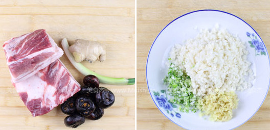
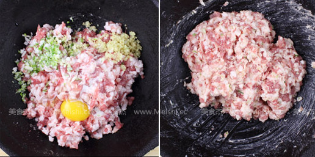
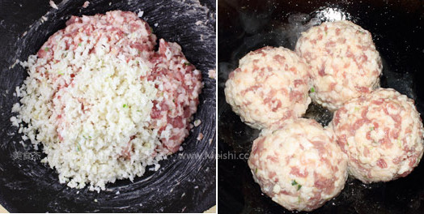
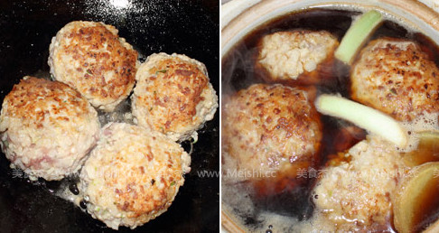
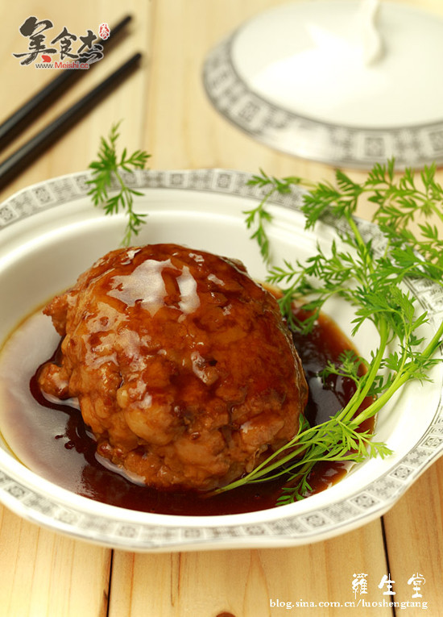

“在一个遥远的地方，有一个素有“书乡”、“茶乡”之称，并被外界誉为“中国最美的乡村”的世外桃源，那里的山，那里的水，那里的花，那里的草，那里的人，那里的情，都是这么的让人留念。 在那里，山中有村，村后有山，山上古树浓荫；村旁有水，水倚家园，清清河水天际流。白墙黑瓦，溪水缓缓，云烟雾绕，倒影其中。小桥流水古村落，青山秀水画中游，桃源胜境、画里乡村，好一幅天人合一的江南画卷。 在那依山傍水、如诗如画的家乡，我度过了人生最快乐的一段；在那田间的小道，我留下了无数成长的脚印；在那炊烟袅袅的厨房，父母给我做过无数的美食。 狮子头，一个很家常的菜。有着很多不同的做法和不同的口味。而在我的家乡，也有着它独特的做法，而且一般都是用来清蒸，实实在在的营养又健康，原汁原味、美味至极。”
1、准备好所有主要食材
2、马蹄(荸荠)、葱姜切细末备用

3、五花肉去皮，先切片再切丝然后切粒，然后放葱姜末、盐3克、少许黄酒、鸡蛋和少许水淀粉拌匀
4、顺着一个方向多搅拌一会儿，使其上劲，不容易破裂

5、搅匀后把马路末倒进去接着一个方向搅拌一会儿，有粘性就可以了，抓一把肉馅团成大丸子，在手里左右倒几十个次，表面有粘性就可以了，可以做四个大丸子
6、锅里放少许植物油，把丸子一个一个小心的放进去

7、中小火慢煎至两面金黄就可以了，关火不要动了
8、砂锅倒水坐火上，放生抽70克、 老抽5克 、蚝油20克、 黄酒30克 、盐15克、 冰糖10克 、葱段姜片适量煮开后关小火，等水不翻滚后把丸子小心的放进去，中火烧开后立刻关小火，慢炖4个小时即可(吃的时候把狮子头捞出来放盘中，盛少许汤汁在炒锅中勾一个薄芡，浇在上面便可)

